Tutorial 02: Animation
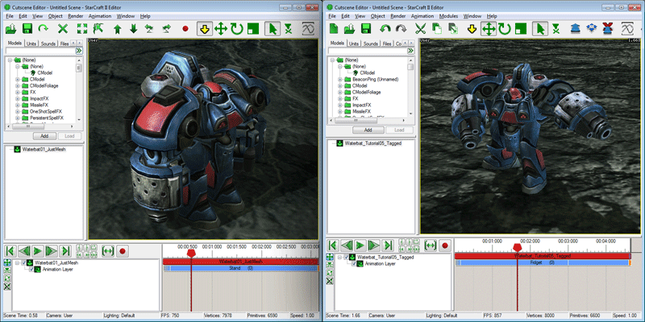StarCraft II uses bone-based animation. Geometry can be linked or skinned to a skeleton; the exporter should handle both correctly. This tutorial focuses on getting an already rigged and animated model into game.
Rig Setup
-
To animate a model for StarCraft II, it will need to use a skeletal rig, that honors our Animation Guidelines. The act of creating such a rig is outside the scope of this tutorial, though there are other rigging tutorials available. If you wish to build your own, the file 'Waterbat_Tutorial02_Textured.max' can be used as a starting point. If you prefer to use an existing rig, one has been provided as 'Waterbat_Tutorial03_Rigged.max'.
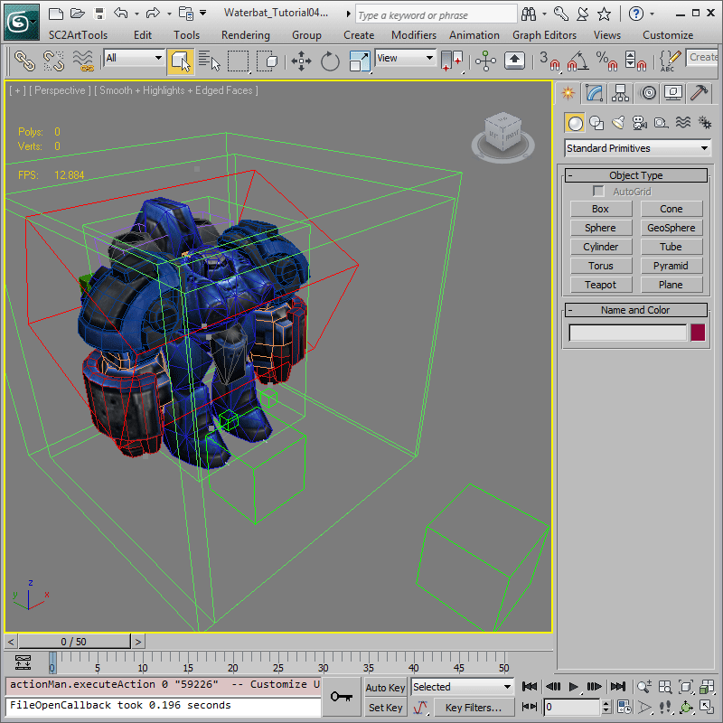
Animation Setup
-
Animating can be a fun, artistic process, and you are welcome to provide your own animations. While the act of animating in 3ds Max is also outside the scope of this tutorial, we have provided a set of animations for the Waterbat in 'Waterbat_Tutorial04_Animated.max' which you can use for this tutorial. StarCraft II uses several predefined Animation Names and automatically binds many of them at runtime using a Fuzzy Matching System. For the Waterbat, we have provided 'Stand', 'Fidget', 'Turn Left', 'Turn Right', 'Attack', 'Death', 'Walk', 'Unload', and 'Unload End' animations.
Anim Props
Animations in a model file are defined by tagging slices of the timeline. There can be as many or as few in a single file as you like, and they may be in any order at any positive time. They are managed with the 'Anim Props Floater'. Animations must follow the Animation Guidelines, and have Animation Names comprised of Valid Animation Tokens.
-
In order to view and edit Anim Props, navigate to the Menu Item, 'SC2ArtTools > Animations > Anim Props Floater'.
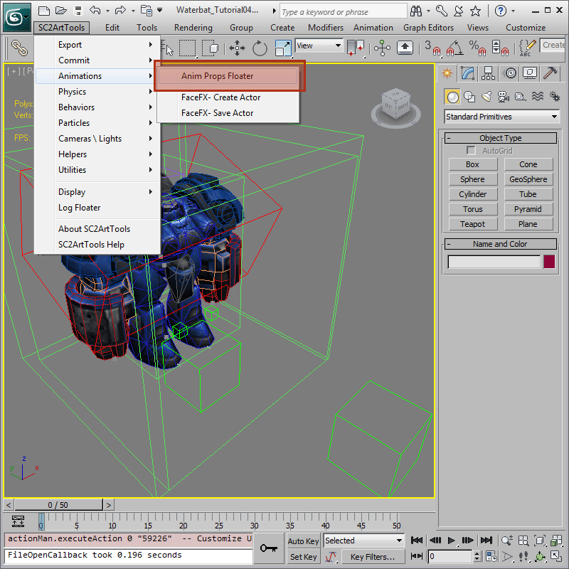 -
This should bring up the Anim Props Floater. At this point, the dialog should be relatively blank. To add new animation definitions, click on the 'New' button.
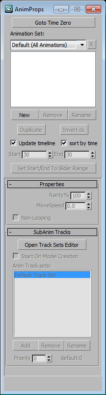 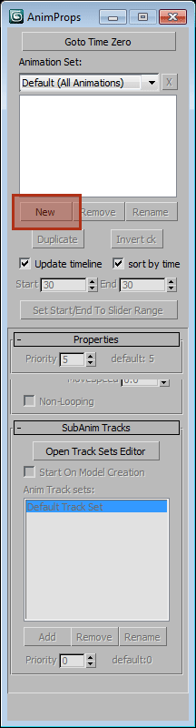 -
This should bring up yet another new dialogue, the 'Create New Anim' prompt. Select 'Stand' in the long list. If you are using the sample file, set 'Start' to '100' and 'Length' to '95', because the example 'Stand' animation exists from frames 100 to 195. If you are not using the example file, match it to wherever your basic looping idle animation is in time. Once you hit 'Add' you should be presented with the Anim Props Floater again, but now with an animation listed.
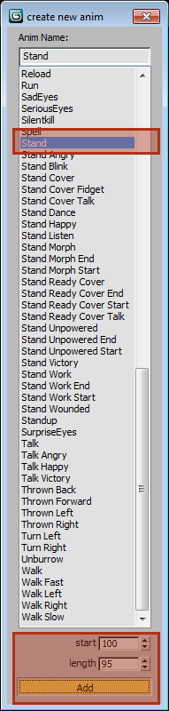 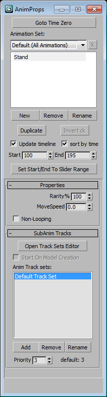
'Stand'
-
'Stand' is the most important general purpose animation for StarCraft II. It serves as the baseline idle that all models will play. If a model is exported with animation, but no animation is defined, it is assumed to be 'Stand'. It should be an idle loop that can be easily blended in and out of. In 'Waterbat_Tutorial04_Animated.max' 'Stand' extends from frame 100 to frame 95.
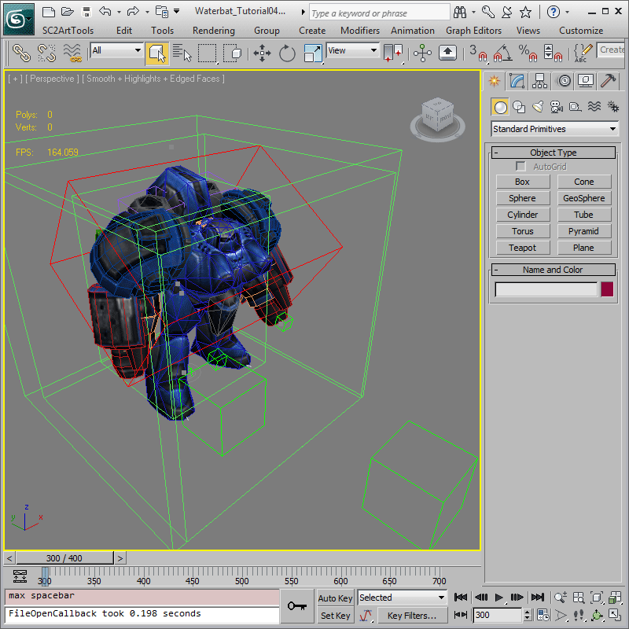 -
Animations can have variations that are swapped at random at runtime. A two digit number placed as a separate token in the animation names will specify such an implicit variation. As such, an alternate animation, 'Stand 01' has been included in the example from frames 300 to 400. To mark this animation for export, repeat the Add Animation process in Step 4 and Step 5 but with the appropriate frame ranges. By choosing the same animation name, the Anim Props Floater will automatically add the appropriate variation token.
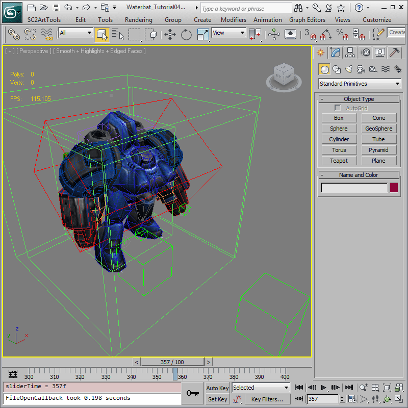
Navigating Anims
-
Now, with more than a single animation defined, the Anim Props Floater has some additional utility. By clicking an animation name, the floater will automatically update the timeline to view that animation. This behavior can be disabled using the 'Update Timeline' checkbox if desired. If you made a mistake in the time ranges, the 'Start' and 'End' fields can be used to make corrections. The 'Goto Time Zero' button can be used to go back to Time Zero, where changes to geometry and non-animatable parameters can be made safely.
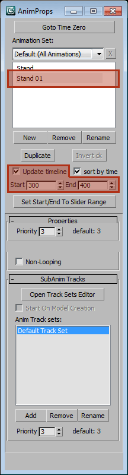 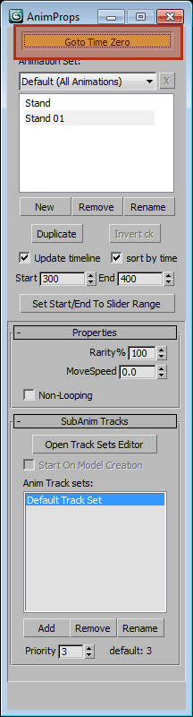 -
View the Waterbat in the Cutscene Editor using 'SC2ArtTools > Export > Preview'. The Waterbat should be playing the 'Stand' animation as that is the common fallback.
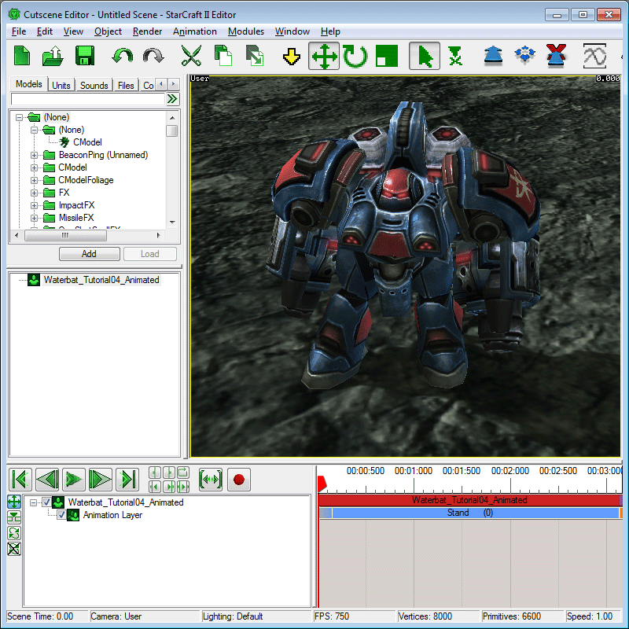 -
Right-click the blue Animation Block that reads 'Stand (0)' to expose options for manipulating the block. Choose 'Change Animation > Stand 01' to view the variant Anim. You can use this method to view any animation present on the model.
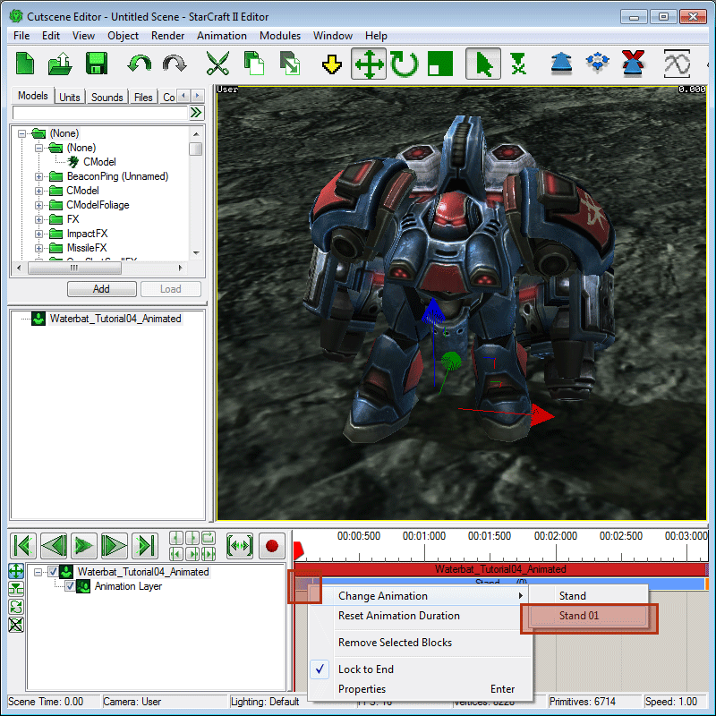
Common Animations
For all the following animations, you will again want to repeat the Add Animation process in Step 4 and Step 5 but with the appropriate frame ranges. The following section provides a brief description of each animation and the frame ranges to use.
'Fidget'
-
'Fidget', from frames 500 to 590 for the Waterbat, is a special idle animation that is played far less often than a stand. During a regular game it is mixed in after a unit has been standing still for awhile. It is common to put in animations that really sell the personality of the unit here. You are free to make them grandiose, as they are not played often.
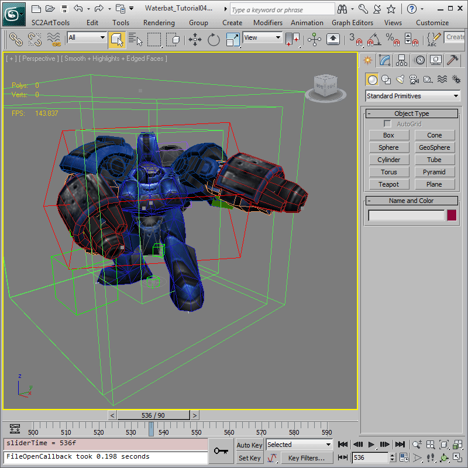 -
'Fidget 01' extends from frames 700 to 790. Much like 'Stand 01' it is an implicit variation, and the engine will automatically choose one at random.
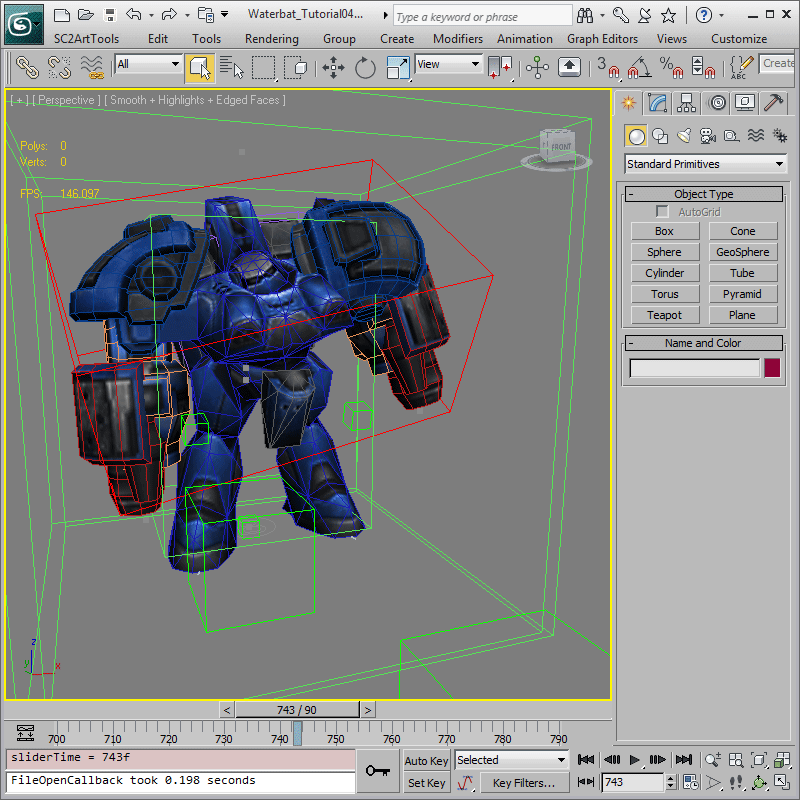
'Turn'
-
'Turn Left' is between frames 900 and 910. Turns are used to reorient the character, and are often very short, simple animations. They are blended into and out of very quickly, and thus generally only need to imply some sort of rotational movement. The character itself should not change orientation in the animation.
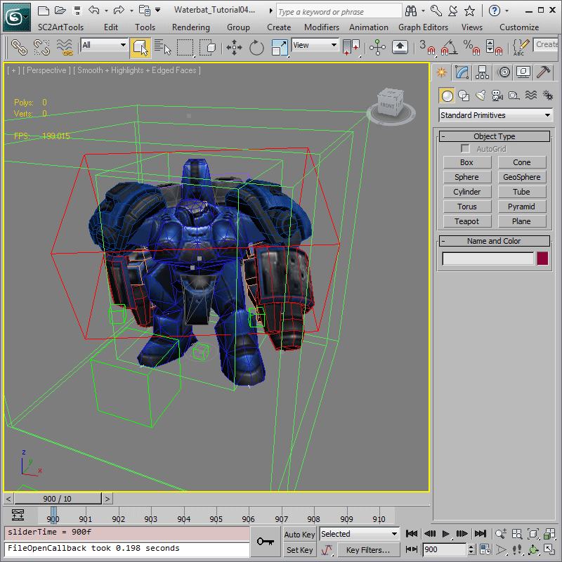 -
'Turn Right' is the right-ward counterpart and sits on frames from 1000 to 1010 in the provided examples.
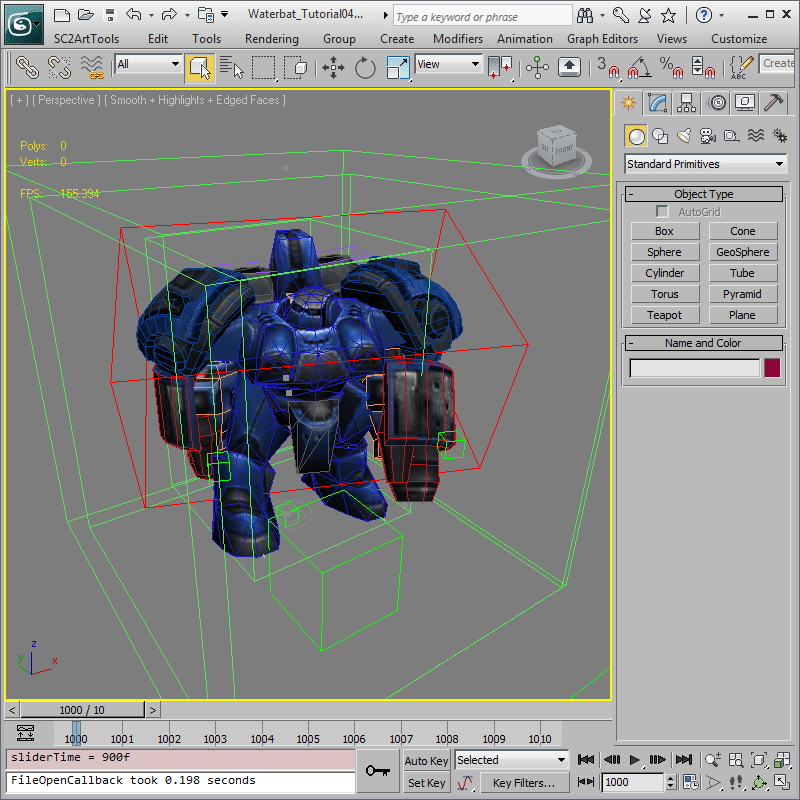
'Attack'
-
'Attack', from frames 1100 to 1160, is played whenever the Waterbat uses its weapon. The animation may loop, but it is not guaranteed to finish. The refire rate on the animation is tied to the attack rate in Data, and will be retriggered on that interval. If the attack requires a different idle pose, you may need to author a 'Stand Ready' animation which is often used for an attack-ready idle in Data.
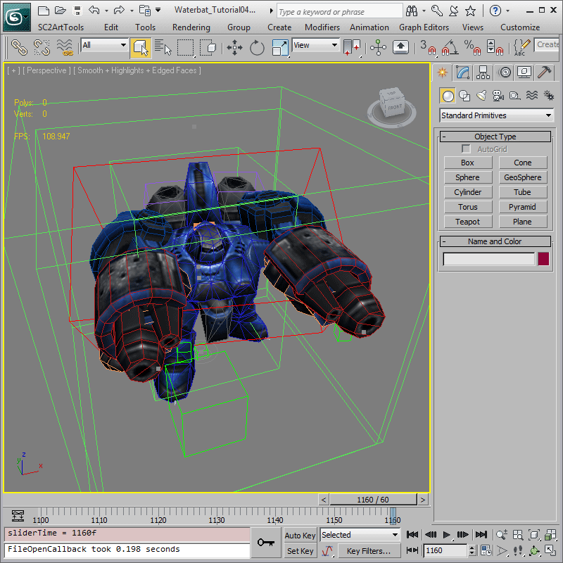
'Death'
-
'Death' animations in StarCraft II are generally 300 frames long, and as such, the Waterbat's extends from 1300 to 1600. They are played when the unit is killed, and can be made more specific using additional Animation Tokens. 'Death' animations must remove the model from vision, because when the animation finishes, the model will cease to be drawn. They generally will also mute the colors of units, by doing things like turning off emissive, so that dead units are less distracting to the player. The common techniques for this involve either doing a fade-out, a dissolve, or simply sliding the model underground.
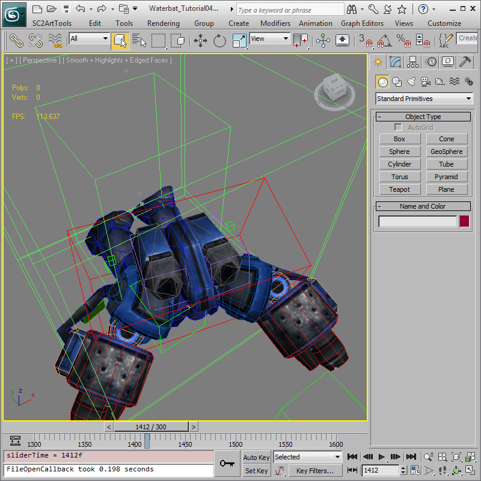 -
It doesn't make sense to loop death Animations, and in fact it can cause unwanted behaviors, so in the 'Anim Prop Floater' navigate to Properties > Non-Looping and enable the checkbox. This will define this as a one-shot animation.
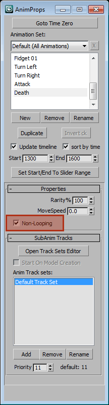
'Walk'
-
'Walk', from 1700 to 1728 for the Waterbat, is an animation cycle that is played whenever the model is moving, if it is available. Walks should be concise, looping animations that can be easily blended in and out of, especially from 'Stand' and 'Attack'.
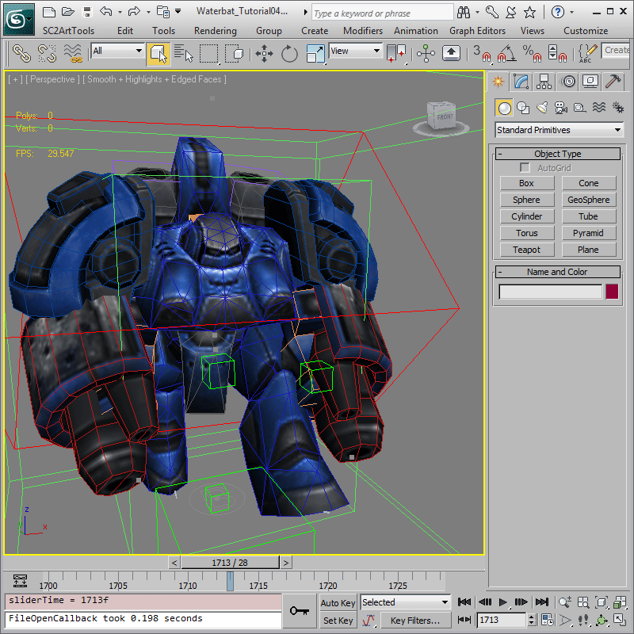 -
Walks can have some extra features for scaling animations and previewing properly. Defining 'Properties > MoveSpeed' enables these features. For the Waterbat, we want a value of about 190.

-
To view your walk animation moving forward in the Cutscene Editor, you can go to 'Animation > Toggle Walk'. This will make the model move forward at 'MoveSpeed', and you can verify that feet are locking correctly and everything looks natural.
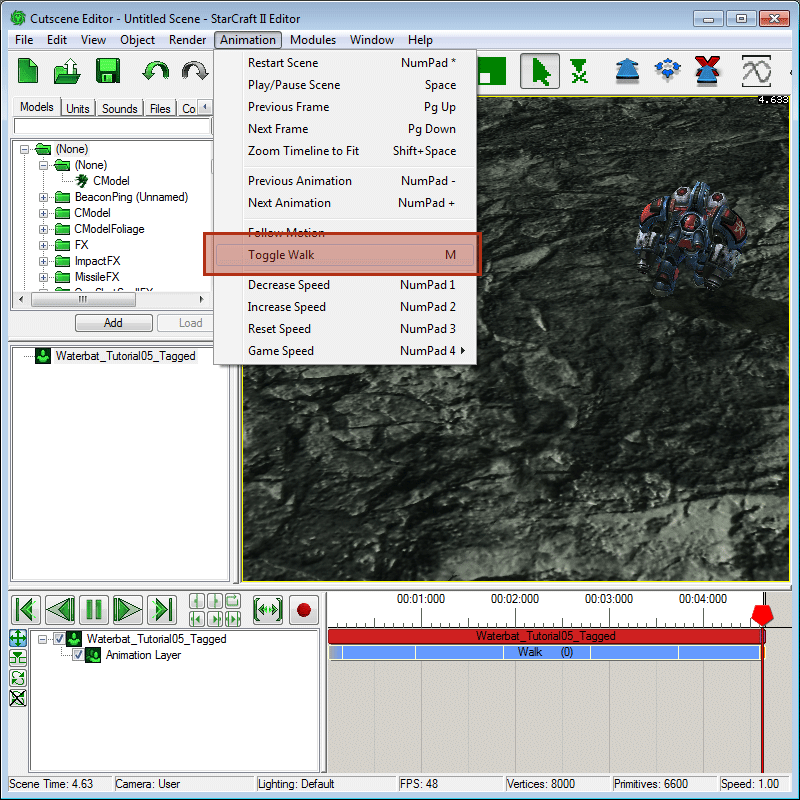 -
Because the Walk position resets to the Actor position when time loops in the Cutscene Editor, you may want to extend the timeline to get a better look at how the walk animation loops. Left-click the anchors at the far right of the blocks in the timeline and drag them out to the right to give yourself more time. Looping animations will automatically play for the full duration.
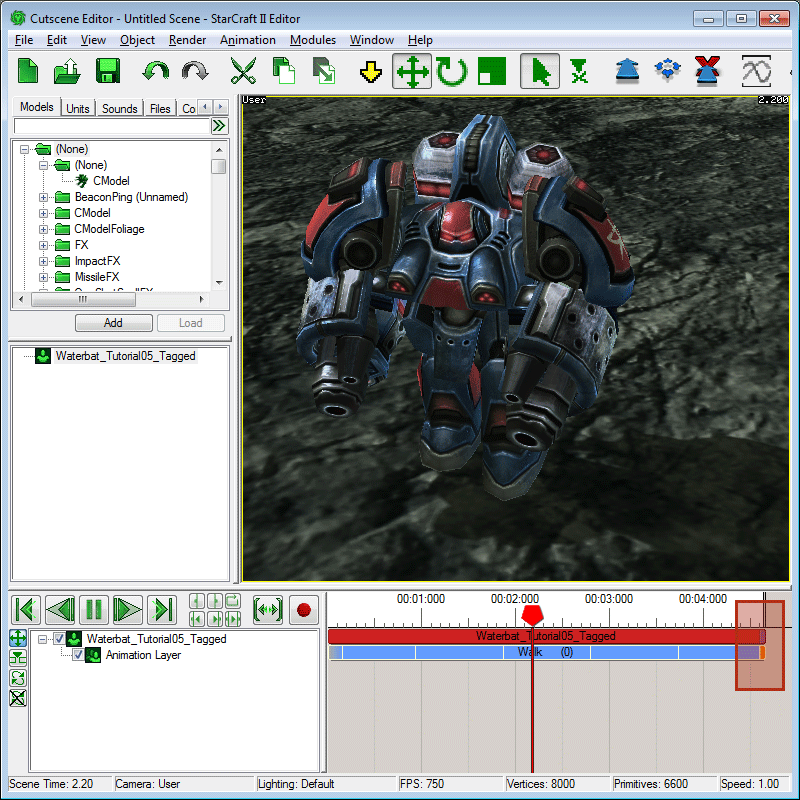 -
If the Waterbat runs off screen and you would prefer it to stay centered in the viewport, you can toggle the Animation > Follow Motion option.
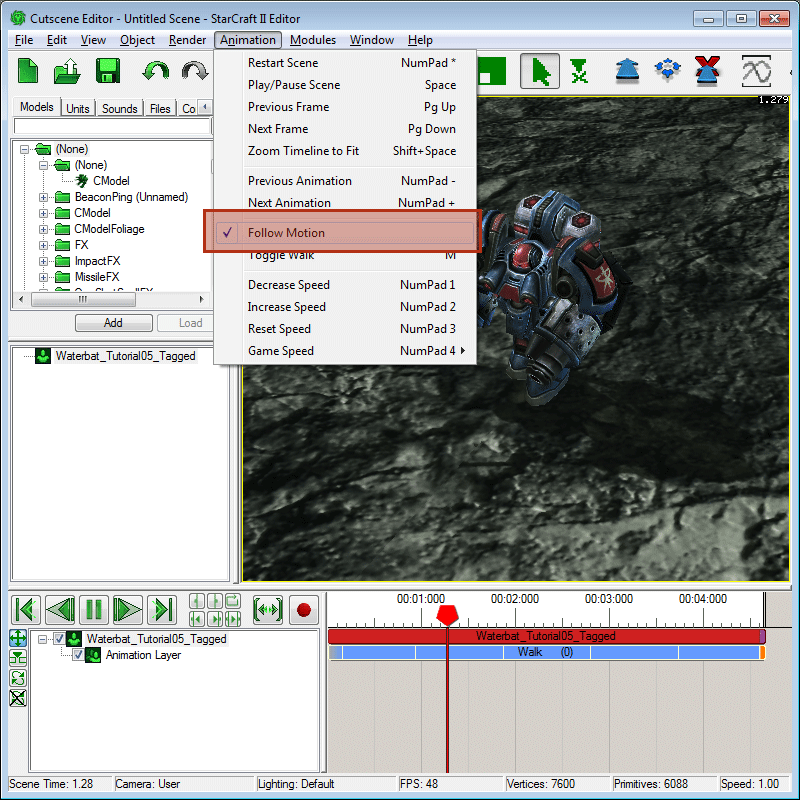
'Unload'
-
'Unload' occupies frames 1901 and 1900. This is a generic idle for when exiting a dropship. The unit isn't actually visible most of the time in the dropship. The important part is that this animation should be a logical loop and lead cleanly into 'Unload End'.
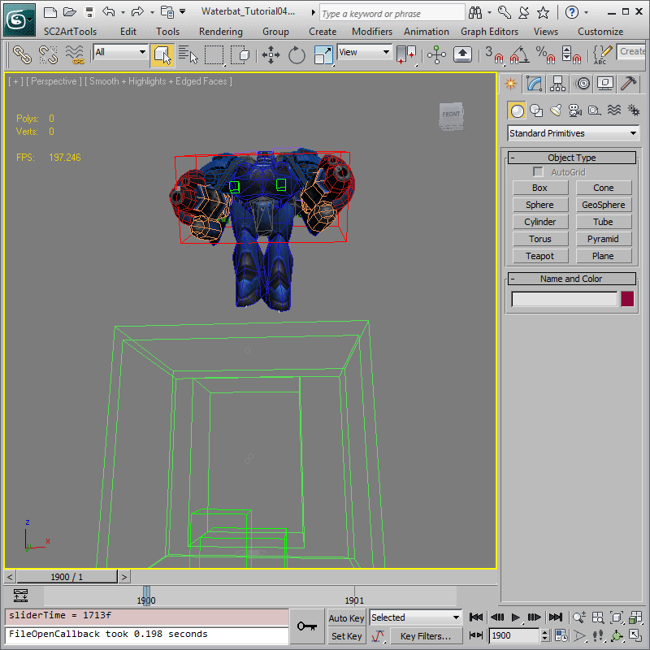 -
'Unload End' sits from frames 2000 to 2045, and is the last animation for the Waterbat. Unload End is played when a unit exits a dropship, and should bring the unit from approximately 180 Max units in the air to the ground, normally transitioning directly into 'Stand'.
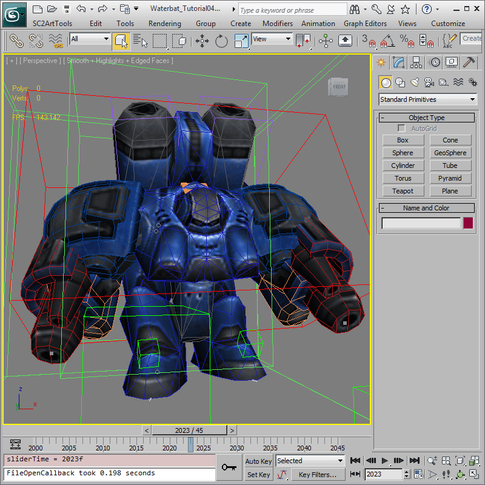 -
Much like 'Death', there is no sensible way to loop 'Unload End'. We should then make Unload End as Non-Looping as well.
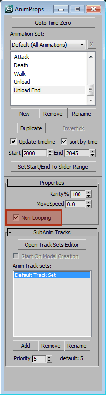
Final Touches
-
You can 'SC2ArtTools > Export > Preview' and toggle between all the different animations available at this point. The Waterbat should have a usable set of animations, and is almost ready to use in-game.
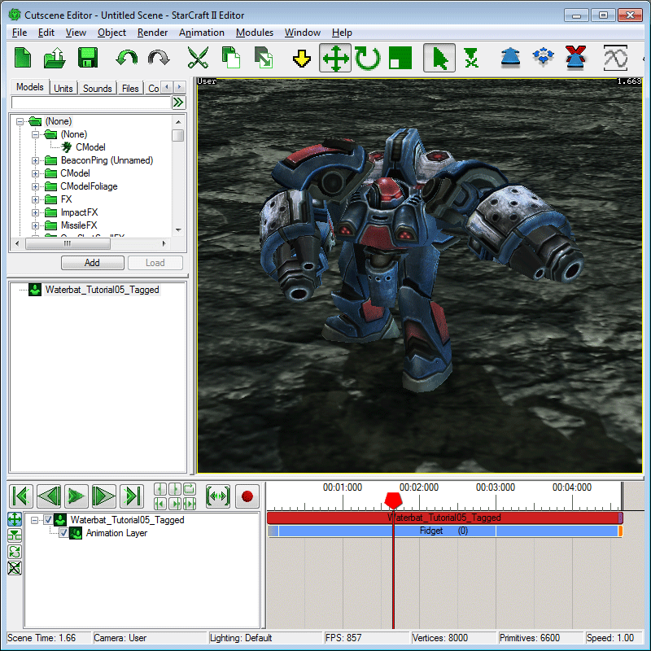